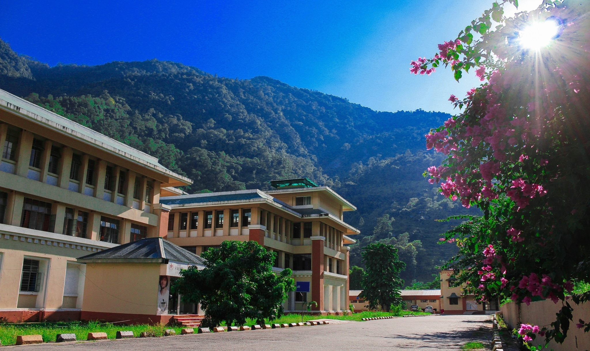

Sikkim Manipal Institute of Technology (SMIT), established in 1997, is a constituent college of Sikkim Manipal University (SMU), which was founded in 1995 under the SMU Act (No. 9 of 1995). SMU is recognized by the UGC and approved by the Government of India. SMIT offers AICTE-approved undergraduate and postgraduate programs including B.Tech in Civil, CSE, AI & ML, ECE, EEE, ME, IT, AI & DS, along with MCA, MBA, and UGC-approved programs like BBA, BCA, M.Sc (Physics, Chemistry, Mathematics). The institute holds ISO 9001 certification and has received NBA accreditation. Located in Majhitar, Sikkim, the 35-acre campus hosts 3500+ students and features top-notch infrastructure including a Wi-Fi enabled campus, modern labs, and a rich library. With past international collaborations (UK, US), SMIT ensures quality education and global exposure. Set along the River Teesta and surrounded by scenic hills, SMIT offers a vibrant and enriching learning environment.